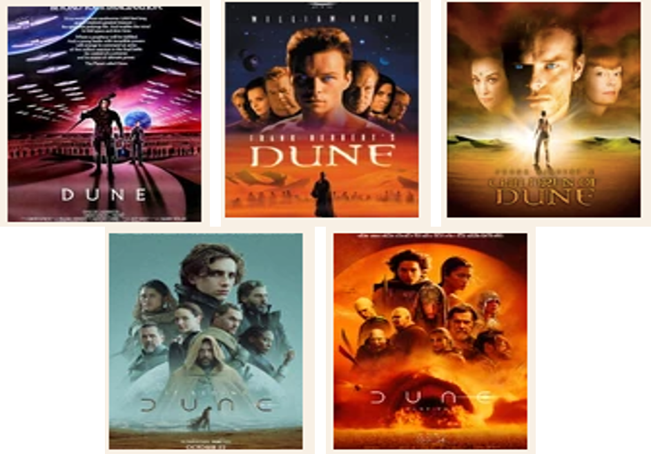

La saga Dune tambien ceunta con sus adpataciones tanto a la pantalla grande como a la chica, con un total de 5 adaptaciones, las cuales son:
- Dune (1984): Por orden imperial la familia Atreides deberá hacerse cargo de la explotación del desértico planeta de Arrakis, conocido también como Dune, el único planeta donde se encuentra 'la especia', una potente droga que, además, es necesaria para los vuelos espaciales.
- Dune la leyenda (2000):Miniserie de 3 episodios. Arrakis, también conocido como Dune, el planeta desierto... El último lugar al que nadie querría ir y, sin embargo, el planeta más importante del universo, la puerta hacia un conocimiento superior y la fuente de la sabiduría. A pesar de sus adversas condiciones climáticas y la casi completa ausencia de agua, sólo en Dune se encuentra el bien más codiciado: la especia conocida como melange. De incalculable valor y vital para el comercio entre planetas, varias casas nobles y diversas organizaciones tienen su mirada puesta en Dune, y ansían hacerse con sus riquezas.
- Hijos de dune(2003): Miniserie de TV de 3 episodios. Dune, la antigua profecía, se ha cumplido: el mandato del legendario Muad's dib ha transformado milagrosamente las tierras perdidas. Pero como siempre, en La Gran Casa del Imperio siguen surgiendo rumores de conspiración, complots y traiciones. Y cuando Muad's dib ya no tiene el poder para ejercer de emperador, su joven hijo Leto y su hija Ghanima se enfrentan a una posible, y desastrosa, guerra civil en Arrakis, lo que comportaría el caos de la galaxia...
- Dune(2021): En un lejano futuro, la galaxia conocida es gobernada mediante un sistema feudal de casas nobles bajo el mandato del Emperador. Las alianzas y la política giran entorno a un pequeño planeta, Dune, del que extrae la "especia melange", la materia prima que permite los viajes espaciales. La Casa Atreides, bajo el mandato del Duque Leto Atreides recibe el encargo de custodiar el planeta, relevando en la encomienda a sus históricos enemigos, los Harkonnen. Paul Atreides, hijo del duque, se verá atrapado en las intrigas políticas mientras descubre el destino que le deparan los desiertos de Dune.
- Dune Parte dos (2024): Sigue el viaje mítico de Paul Atreides mientras se une a Chani y los Fremen en una guerra de venganza contra los conspiradores que destruyeron a su familia. Al enfrentarse a una elección entre el amor de su vida y el destino del universo conocido, Paul se esfuerza por evitar un futuro terrible que solo él puede prever.
|
 |